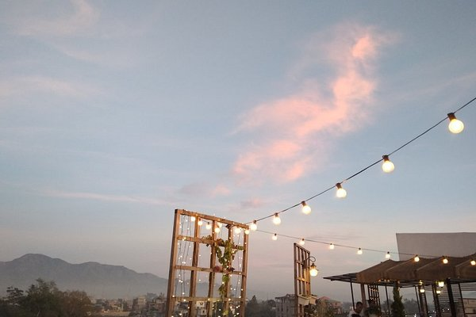
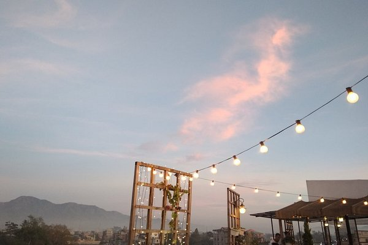

This web is to specially bring all the Events , Travel's destination , Transport facilities in the district of CHURACHANDPUR to help visitor and outsider to CHURACHANDPUR know more about the district and find it easier to book Hotels, Transport's, and other facilities easier for the user.
We provide the service of booking Resort's, Hotel's, Transport ,Travel guide and many more which will help your travel becomes more convenient.

 
